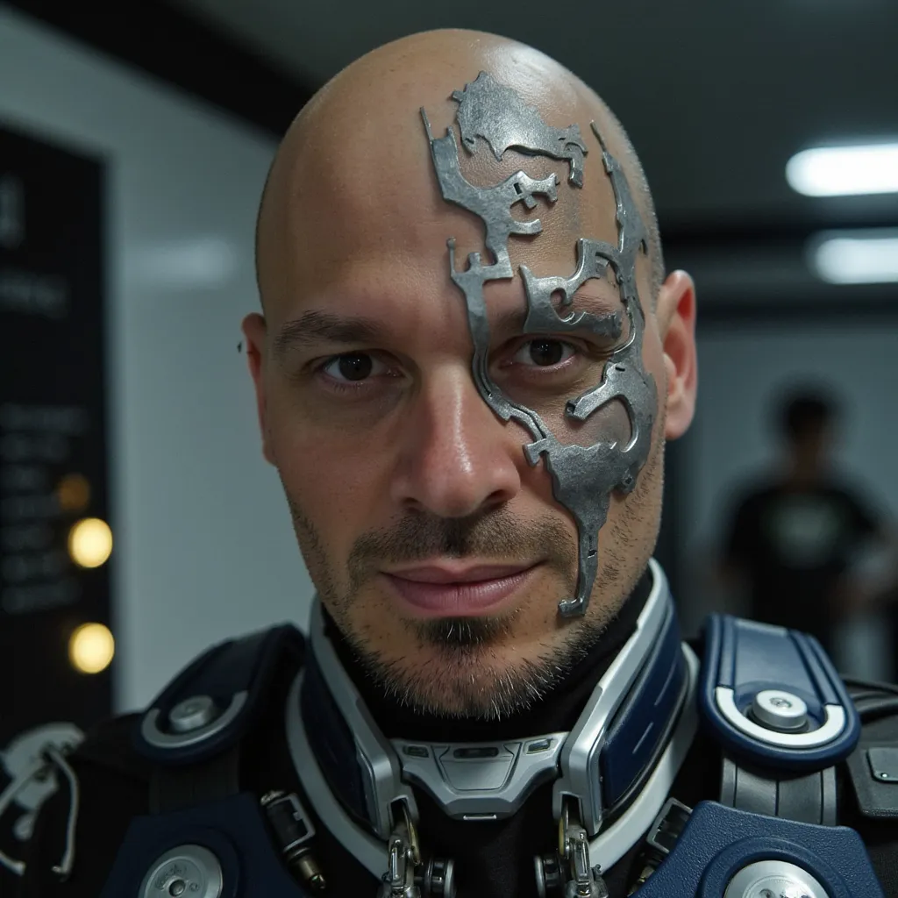

AI innovation driver and chemist, bridging science and technology.AI innovation driver and chemist.
Problem solver building strategic partnerships that drive positive impact.Problem solver for sustainability, tech and partnerships.